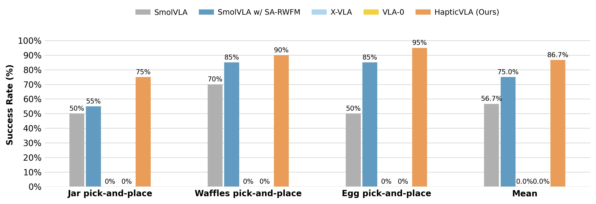

HapticVLA：把触觉用于训练，部署时只保留常规 VLA
HapticVLA：把触觉用于训练，部署时只保留常规 VLA
值得记住的四点：触觉既提供教师的输入，也为示范质量打分；v2 方法节采用的是动作目标蒸馏；最佳配置在三项真机任务达到 86.7%；蒸馏收益依赖控制方式，尚不能推出“视觉足以替代实时触觉”。
1. 背景与材料边界
论文全名为 HapticVLA: Contact-Rich Manipulation via Vision-Language-Action Model without Inference-Time Tactile Sensing，作者来自 Skoltech Intelligent Space Robotics Laboratory，前三位共同一作。本笔记依据 arXiv v2 全文（2026-08-02），核对方法公式、Fig. 5 和 Table I；未运行作者代码或复现实验，会议状态不作认定。DeepXiv 获取失败后改读官方全文。
版本内有实质性叙述冲突：摘要、引言和 Fig. 2 图注说学生预测 tactile token；§III-B 却明确规定无架构修改、删除触觉编码器、混合教师动作与示范动作训练。以下以可操作的 §III-B 与 Eq. (21–25) 为方法依据，不把“预测触觉 token”当成已确认的实现。
2. 关键问题：看见鸡蛋，不等于知道何时会夹碎
论文的真实任务之一是打开蛋盒、抓起鸡蛋并放到托盘指定槽位（§IV-B）。抓取位置正确仍可能失败：夹得太紧会破壳，太松可能滑落。成功标准包含物体完整，而不只是到达目标。
触觉传感器能直接反映接触分布，但增加硬件集成负担。HapticVLA 的问题是：能否在采集和训练时用触觉识别安全动作，把这些偏好写进普通视觉—语言—动作模型，部署时不用触觉输入？ 这里的“无触觉”不等于只有单张图：学生仍接收语言和本体状态。
3. 关键方法：先给示范打安全分，再蒸馏教师的动作
沿用抓鸡蛋这条轨迹：训练数据保留相机图像、指令、关节状态、示范动作和指尖触觉图；离线计算哪些片段用力危险；教师更多拟合高分片段；再让学生从视觉、语言和关节状态学习教师修正后的动作。实际执行时，学生输出动作块，不读取实时触觉。

来源：原文 Figure 2。沿触觉数据到离线奖励、再到教师和学生的路径阅读，区分训练时的触觉监督与部署时的视觉和状态输入。关于学生具体学习什么，仍需结合下文的动作蒸馏目标理解。
3.1 触觉奖励如何改变教师？
§III-A 从左右指尖触觉图提取平均力代理、峰值、压力集中度、压力中心变化；稳定夹持期间，以压力中心跳变或力骤降识别滑动。逐步奖励惩罚过强夹持、夹持期力不足、局部高压、压力过度集中、两侧不对称和滑动。整段奖励还加入成功、掉落、损伤以及高分位风险项。
这解释了为什么不能只惩罚“大力”：抓鸡蛋时，持续减小夹力也可能造成掉落；局部压力集中同样可能比平均压力更危险。阈值由数据分位数标定，这是经验安全代理，不是经过物理证明的破裂边界。
教师以 SmolVLA（0.45B）为基础。对每个动作块，将整段回报和局部折扣回报分别做组内稳健标准化，再合成分数：
权重再按 batch 均值归一化。最终目标是加权 flow matching（FM，将噪声逐步变成动作的训练目标），加上相对初始模仿模型的参数锚定项：
式子压缩自 Eq. (15–20)；局部回报折扣为 0.99。锚定和权重 warm-up 用来限制偏移，防止过早偏向少数高分轨迹。具体冻结范围、优化器和完整训练日程在正文中没有交代清楚，复现前需核查实现。
负奖励不等于反向学习坏动作。 所有样本权重仍为正：失败示范只是相对少被模仿，没有显式产生“远离该动作”的梯度。这个区别决定了它对严重污染示范的处理能力。
另一个表述问题是 Fig. 2 说 reward 作为额外条件送入 action expert；Eq. (11–20) 和 Algorithm 1 明确展示的作用则是损失加权。是否还存在独立 reward 条件通路，正文不足以确认 [?]。
3.2 学生具体学什么？
§III-B 的教师输入状态为 6 维关节状态加 128 维触觉 embedding，共 134 维；每个动作块长度为 50，每臂动作维度为 6。蒸馏分三步：
- 预计算教师动作：冻结已训练教师，在训练集观测及真实触觉条件下生成动作块，缓存成软目标；学生训练时不用在线运行教师。
- 继承教师参数：拷贝非触觉参数，删除触觉编码器；状态投影从 $32\times134$ 截取本体状态对应的前 6 列，成为 $32\times6$，保留偏置。
- 训练混合动作目标：令 $\tilde a=0.5a^{GT}+0.5\hat a^T$，将其替代原始示范作为 FM 目标。教师提供安全偏好，示范用于约束教师错误（Eq. 24–25）。
回到鸡蛋：学生学习在类似视觉与关节状态下执行更合适的夹爪轨迹，正文并没有给学生增加一个显式预测实时力的监督头。其输出仍是关节动作，不能直接称作闭环力控制。
最近的区别也因此更清楚：论文 §II-B 描述 FD-VLA 通过预测 force token 注入模型；HapticVLA v2 的可操作方案则把特权信息通过教师动作和参数初始化转移。没有 FD-VLA 的直接实验对照，不能据此宣称蒸馏方式更优。
4. 数据与评估：小规模、任务定制的真实机器人验证
§III-C 共采集 310 条轨迹：两个单臂任务各 70 条成功、20 条错误示范；一个双臂任务 100 条成功、30 条错误示范。错误示范包含过大夹力造成的永久损伤或明显变形。三个任务是塑料果酱罐、华夫饼和鸡蛋搬运。
平台为双 SO-101，右臂平行夹爪两指各有 $10\times10$ 触觉阵列，触觉采样 120 Hz；视觉为外部视角和两路腕部 RGB，相机分辨率均为 $640\times480$。§IV-A 报告计算平台为 Jetson Orin NX 16 GB。论文没有给出足以评估训练成本与控制延迟的完整 profiling。
每个模型每项任务测试 20 次。罐子允许可恢复形变；华夫饼不能有裂纹或碎屑；鸡蛋需完整且放入正确槽位。这些是任务成功判据，并非连续力误差指标。 正文没有报告明确的未见材质、未见物体或跨平台测试划分。
5. 关键结果：同步蒸馏有效，但收益并不跨配置保持

图源：论文 Fig. 5，作者原图，未修改。重点看 Egg 一组，以及教师和学生在各任务的差距；平均值不能替代逐任务观察。
Fig. 5 显示基础 SmolVLA 平均成功率 56.7%，HapticVLA 为 86.7%，提高 30.0 个百分点；带触觉的 SA-RWFM 教师为 75.0%；鸡蛋相对基础 SmolVLA 提升 45 个百分点。基线都在同一自采数据集微调。X-VLA 与 VLA-0 在这些任务上均为零成功；这能说明当前适配设置未奏效，不能单凭零分判断模型普遍缺乏精细接触能力。
真正决定如何理解“蒸馏更好”的是 Table I：
| 配置 | Jar | Waffles | Egg | 平均成功率 |
|---|---|---|---|---|
| 无 TD，异步 | 16/20 | 18/20 | 15/20 | 81.7% |
| 无 TD，同步 | 11/20 | 17/20 | 17/20 | 75.0% |
| 有 TD，异步 | 14/20 | 19/20 | 15/20 | 80.0% |
| 有 TD，同步（HapticVLA） | 15/20 | 18/20 | 19/20 | 86.7% |
支持的结论：同步条件下，蒸馏后成功次数由 45/60 升至 52/60，三项任务都改善，同时去掉部署触觉输入。
不支持的扩大解释：异步条件下，蒸馏从 49/60 变为 48/60，并未改善总成功次数。异步也不是普遍有害：无 TD 时，异步反而高于同步。作者提出时序错位／有效延迟的解释，但没有相应延迟测量或受控扰动实验，宜保留为假说。
每项只有 20 次测试，一次成败就改变 5 个百分点；未报告多训练种子或置信区间。因此“学生稳定优于教师”比表中证据更强。Table I 也没有独立拆分教师初始化、动作混合比例、奖励加权及触觉条件的贡献。
6. Insights：最值得追问的三件事
1. 蒸馏能转移动作偏好，不能凭空恢复不可观测信息。 方法的监督对象是教师动作；如果相同视觉和本体状态对应不同摩擦或内部脆弱度，学生可能学到折中策略。我的下一步实验会固定物体外观、改变摩擦或刚度，比较学生与实时触觉教师的退化幅度。当前三任务成功率没有回答这个问题。
2. 学生超越教师，可能来自训练目标正则化，而非“理解触觉更深”。 学生同时获得教师初始化、50/50 动作融合和输入简化。这些变化可降低噪声或改变动作分布。应补充普通 SmolVLA 自蒸馏、仅继承权重、仅混合动作、不同混合比例的对照，才能定位额外触觉信息的独立贡献。还应检查逐点平均两条动作轨迹是否会生成不可行路径；凸组合不自动保留避障与接触约束。
3. 安全奖励的价值应由真实损伤检验，而非奖励自己打分。 论文用物体完整性参与成功判据，这是合理方向；但总成功率把定位错误、滑落与破损合并了。下一轮应分别报告损伤率、掉落率、峰值接触统计，并在数据外材质上评估。否则很难判断提高的是安全性还是一般任务执行能力。
我的采用判断：适合将它作为“已有带触觉示范、目标部署机器无触觉”的轻量训练方案尝试；应优先复现动作蒸馏与同步控制对照，而不是先实现摘要所说的 tactile token 模块。
7. 连接
- MOC-VLA — Topic/Area：补充以训练期特权触觉信息改善部署策略的路线，关注动作蒸馏和实时反馈之间的边界。